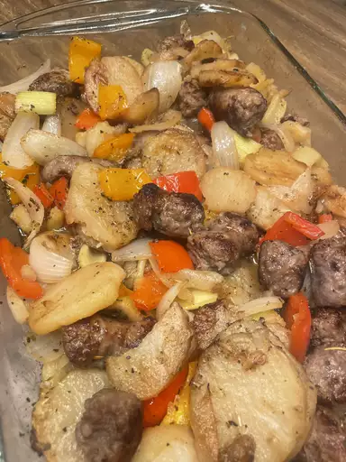

Sausage and Potato Bake

Description
This sausage and potato bake is an italian
comfort food classic
if you're looking for a comforting meal that is made with ingredients you currently have
in the fridge, then you've found the best recipes for you
Ingredients
The ingredients in this bake are as follows
- Olive oil
- Italian Sausage
- Potatoes
- Bell Peppers
- Onion
- White Wine
- Chicken Stock
- Seasonings
Steps
This are the steps needed for making the dish
- Gather all ingredients.
- Preheat the oven to 400 degrees F(200 degrees C).
- Heat 2 teaspoons olive oil in a large skillet over medium heat, and cook and
stir the sausage until browned, 5 to 10 minutes. Transfer cooked sausage to
a large baking dish.
- Pour 1/4 cup of olive oil into the skillet, and cook potatoes, stirring occasionally
until browned, about 10 minutes.
- Place the potato into the baking dish, leaving some oil in the skillet.
- Cook and stir green and red peppers and onion in the hot skillet until they are beginning
to soften, about 5 minutes.
- Add the vegetables to the baking dish. Pour wine and chicken stock over the
vegetables and sausage and sprinkle with italian seasoning, salt and pepper.
- Gently stir sausage, potatoes and vegetables together.
- Bake in the preheated oven until hot and bubbling, 20 minutes. Serve hot.
Home